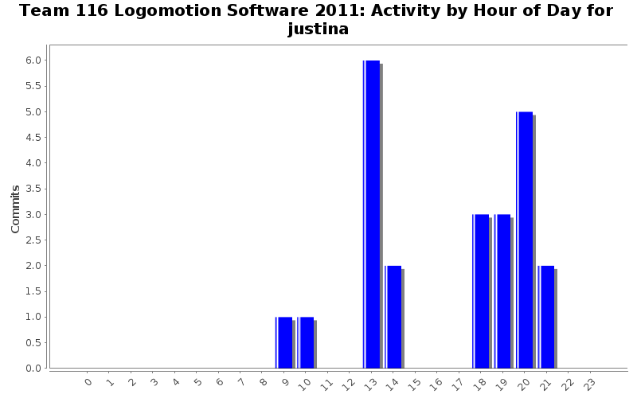
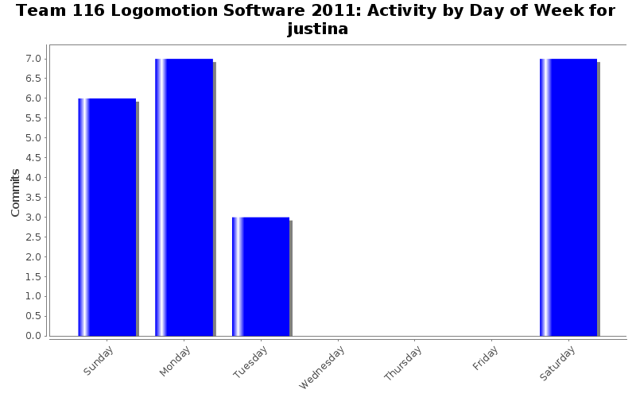

| Directory | Changes | Lines of Code | Lines per Change |
|---|---|---|---|
| / | 13 (100.0%) | 74 (100.0%) | 5.6 |
added error message in minibotdeployment
1 lines of code changed in 1 file:
fixxed minibot deployment: added new piston and kunal spellcheck the word allignment again...
10 lines of code changed in 1 file:
added second piston, other two solenoids for minibot deployment and im giong to use the word fixxed just to add to the statistics
32 lines of code changed in 3 files:
fixxed MinibotDeployment header/source
5 lines of code changed in 2 files:
fixxed stuff...
10 lines of code changed in 3 files:
fixxed MinibotDeployment header
3 lines of code changed in 1 file:
modified MinibotDeployment header according to Ace's specifications
8 lines of code changed in 1 file:
edited MinibotDeployment header
5 lines of code changed in 1 file: